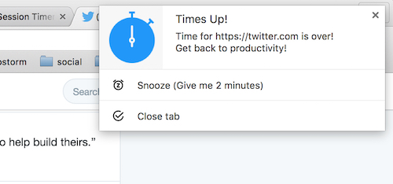

Session Timer
Session Timer
A Chrome Extension to rescue your time by notifying at a configured time limit while browsing time killing sites.
The extension of rescuing productivity - Session Timer
This extension will rescue your time by notifying you at a configured time limit while browsing time killing sites.
How to use?
Step 0: Download and install this extension (see links on sidebar).
Step 1: Add time killing sites to watchlist.
To add in watchlist, go to that site and click on the extension icon.
Then turn on watching by clicking the toggle button at bottom of popup window.
It will immediately appear in watchlist (and alarm will be set behind the scene).
Extension popup window
Step 2: Get Notified!
A notification will be displayed with a light, short alarm sound when your time for browsing
watch-listed sites is over. In that notification, you'll have 2 buttons to choose -
- Snooze : Reset alarm at a few minutes later.
- Close Tabs : Will close all open tabs with that (notifying about) site.

Extension notification window
Step 3: Configure time limits (OPTIONAL).
By default, first notification will be displayed after 10 minutes of starting browsing a listed site.
And, if you choose to Snooze from notification, the alarm will reset at 2 minutes. But you can change these time limits
from Settings page (at the bottom of extension popup). You'll get the following options there to configure -
- Session Limit : The time of showing first Notification (in minutes).
- Snooze Time : When to set next alarm if you choose to "Snooze" (in minutes).
That's All!
Tweet to @ajaxray
for any query, suggestion or just if it helped you anyway :)